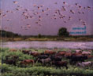
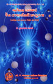

પ્રકીર્ણ
| અબોલની આતમવાણી (૧૯૬૮) ; અહિંસાની – યાત્રા (૨૦૦૨) ત્રૈલોક્યદીપકશ્રી રાણકપુર તીર્થ (૨૦૦૭) ; વર્તમાન સમયમાં જૈનતત્ત્વદર્શનની પ્રસ્તુતતા (૨૦૦૯) | ||
|  |
નવસારીમાં પશુપંખી સેવાકેન્દ્ર સંકુલના પ્રારંભ નિમિત્તે તૈયાર થયેલો ગ્રંથ છે. આ લેખોની વિશેષતા એ છે કે જીવમાત્ર પ્રત્યે મૈત્રીભાવ જેવા શાસ્ત્રીય લેખોની સાથોસાથ પ્રાણીપ્રેમને લગતા અનેક પ્રસંગો અહીં આલેખાયા છે. |
|
|  | વર્તમાન સમયમાં જૈન તત્ત્વદર્શનની પ્રસ્તુતતા |
|
‘ત્રૈલોક્યદીપક રાણકપુર તીર્થ’ એ અનુપમ સ્થાપત્ય-સમૃદ્ધિ ધરાવતા રાણકપુર તીર્થ વિશેનો એક સીમાચિહ્નરૂપ ગ્રંથ છે. આ ગ્રંથમાં સંશોધન, સંપાદન અને લેખન એ ત્રણેયની વિશેષતા જોવા મળે છે. વળી, આ ગ્રંથ ગુજરાતી, હિંદી અને અંગ્રેજી એમ ત્રણેય ભાષામાં લખાયો હોવાથી એનો વ્યાપક પ્રસાર થશે અને વિશેષે તો વિશ્વભરમાંથી અનેક પ્રવાસીઓ રાણકપુર તીર્થની યાત્રાએ આવે છે, ત્યારે આ ગ્રંથ દ્વારા રાણકપુરનો ઇતિહાસ, પરંપરા પુનઃનિર્માણ અને એની સ્થાપત્યસમૃદ્ધિની ઝાંખી મેળવશે. |